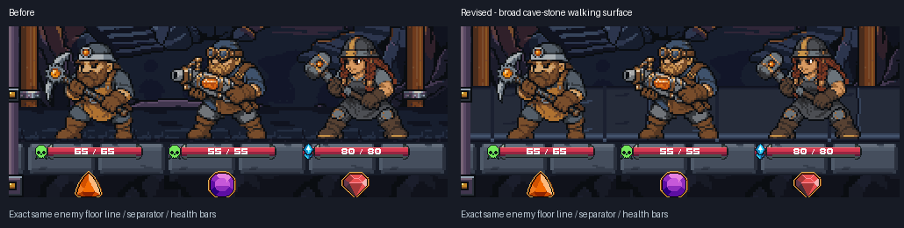
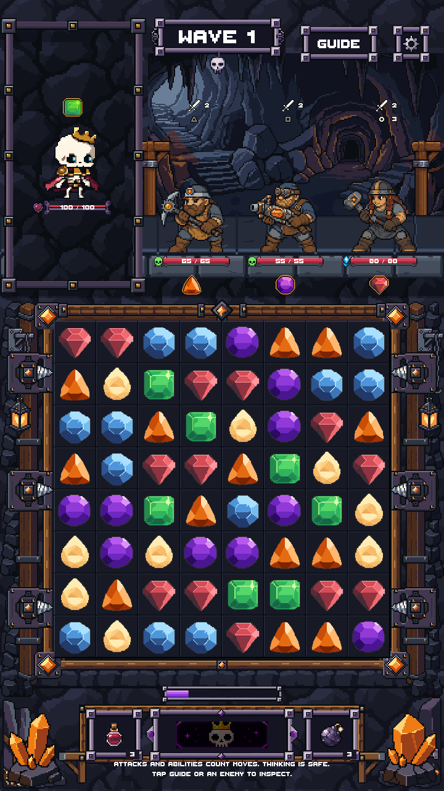
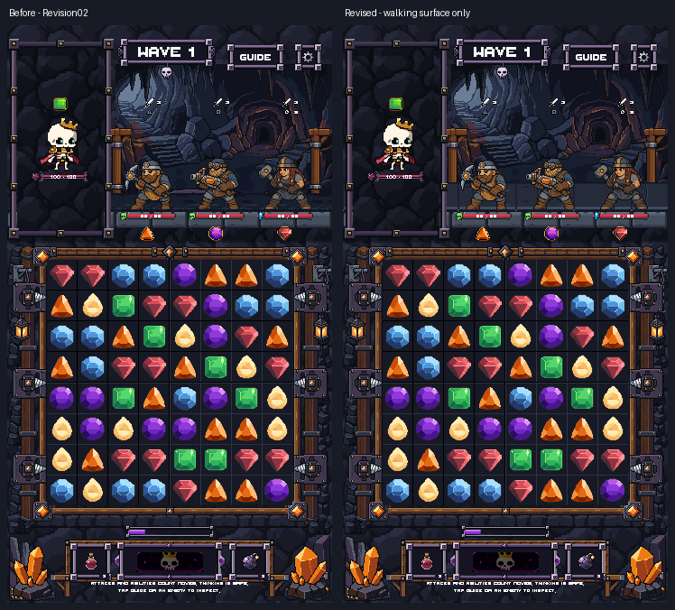

WalkingSlabA
64 x 32 / 5 colors
Three 64 x 32 cave-stone slab tiles use the approved underwater floor's broad plane and restrained joints. The surface extends farther behind the enemies. Their exact floor line, the approved separator and all UI remain fixed.



64 x 32 / 5 colors
64 x 32 / 5 colors
64 x 32 / 5 colors
Native LibreSprite edits on copies of the approved PixelLab-derived Drowned Court floor. Zero new generations. The original underwater artwork, Ironvein separator and prior scenes are preserved. No scaling or interpolation in these tiles.
Unity checks at three sizes preserve original Graphic geometry and sprite references, protected opaque actor/UI pixels, the entire separator and every pixel outside the walking-surface band. This is an art-only Unity preview, not production integration or phone testing. No merge.
Unity checks / Native checks / Pixel scope / Scene comparison / Validation / Previous revision